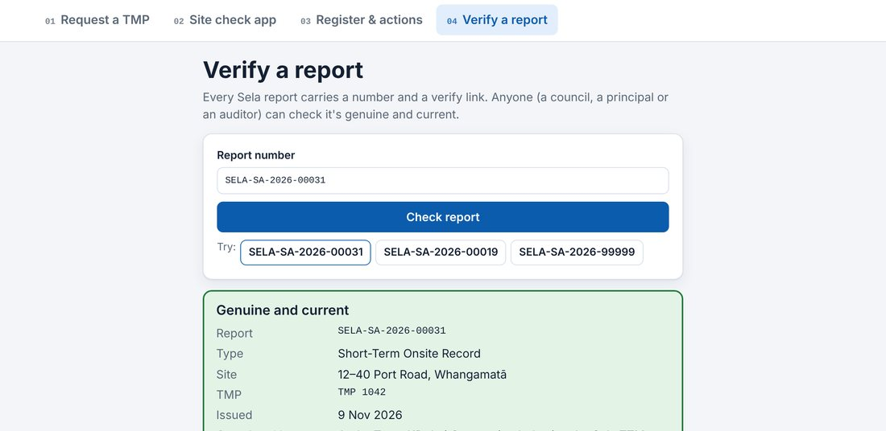

Anyone – a council, principal or auditor – can check a report is genuine and current at tmp.selacivil.co.nz/verify by entering the report number printed on the PDF.

TELL YOUR CLIENT
When you send a report, tell the client they can check it on the verify page.
Anyone, including a council, a principal or an auditor, can check that a report is genuine and current on the verify page, by entering the report number printed on the PDF. When you send a report, let your client know they can check it there.